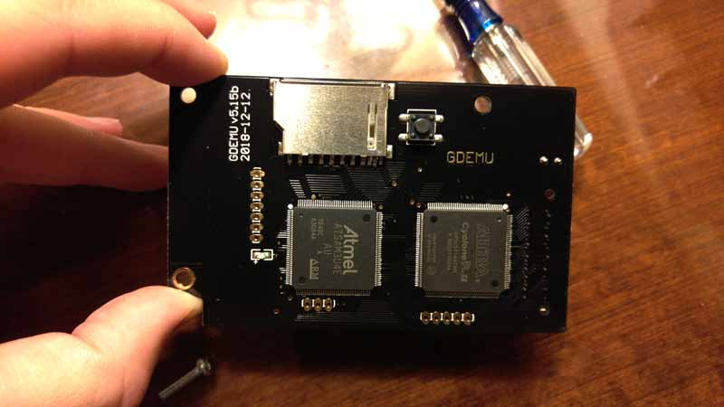
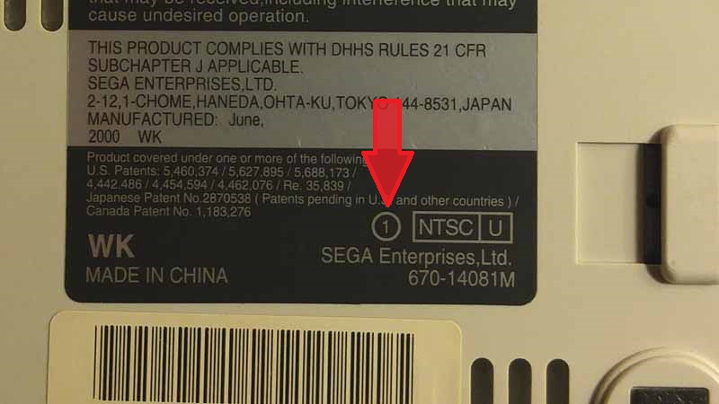
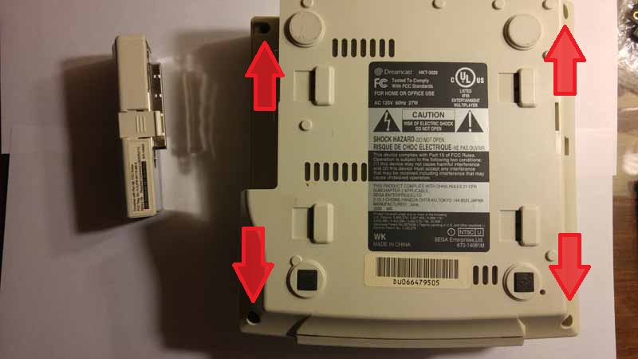
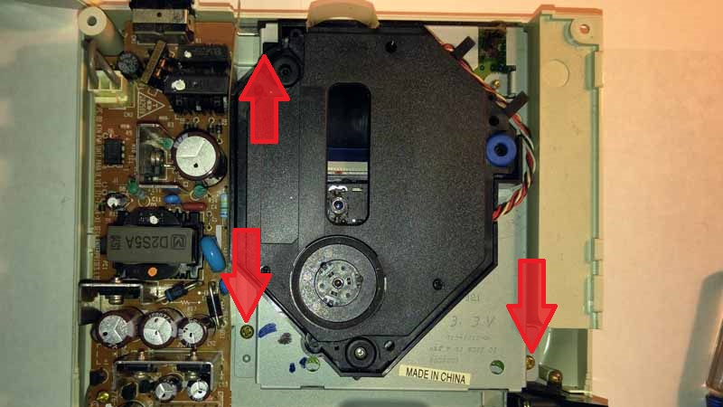
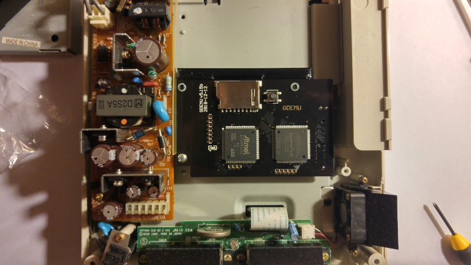
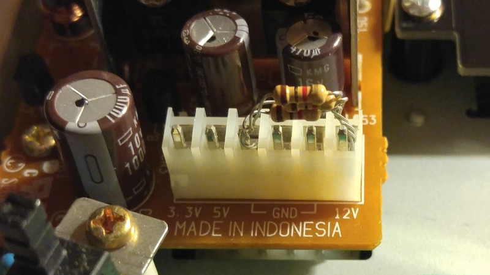
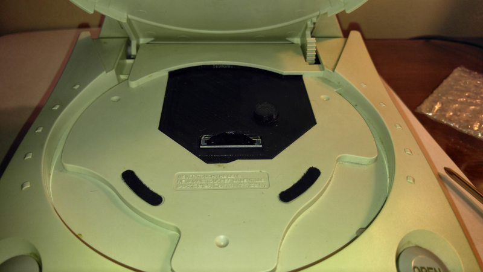

$ BaronBurdock
2022 07 15: GDEMU Installation
I have a pretty bad track record when it comes to CD-based retro consoles: an xbox that I purchased couldn't read discs, I have a PS1 that needs to be flipped upside down in order to watch cutscenes, and who really knows how much life my PS2 has in it (or if it can still read blue discs). Conversely, my cartridge based systems have fared much better despite living tougher lives - my Atari 5200 has had its cables chewed by a dog, my NES and N64 have survived two floods, and my SNES has survived my entire childhood. The takeaway here is that at some point the moving parts in our CD based consoles are inevitably going to kick the bucket (and I'm willing to venture a guess it will happen much sooner than our cartridge based systems).
A couple years ago I pulled the eBay trigger on a Sega Dreamcast. My understanding of the console was as follows: "the Dreamcast was Sega's star-crossed console that tragically died before its time. Desperate to rebuild after the Saturn's colossal failure, the Dreamcast was Sega at its peak: inventive, boundary pushing, offbeat. Given my poor experience with older CD-based consoles in the past, I decided to go a different route with thia Dreamcast. Enter the GDEMU.

The GDEMU is an optical drive emulator (ODE) which is designed to replace the GD-Rom in the Dreamcast. Instead of reading GD-roms, the GDEMU reads various disc images from a specially formatted SD card (more on this later). One important thing to clarify: most GDEMU users out there (at this point) are probably using GDEMU clone (much like the one I am using). Without start a diatribe on intellectual property as a whole, let me just say that much like downloading roms, buying cloned hardware is a questionable practice and my recommendation is that people weigh all the facts before making a decision either way.
My decision to buy a clone had more to do with availability / ease of ordering and less to do with the cost difference. Retrogaming is such a niche interest / small community that I generally try to support the creators in projects that benefit me. I followed the GDEMU project for about two years and was always met with the same message: "Preorders are currently closed." My decision to purchase a clone was made before I was aware of the TerraOnion MODE, another great option out there for Dreamcast enthusiasts. I don't know if the ordering process for the official GDEMU has improved or not. Your mileage may vary.
Hardware Installation
Unlike other mods which require some soldering experience or physical alterations to your devices - installing a GDEMU is shockingly easy. If you can turn a screwdriver you can install a GDEMU. The most important step in the process is making sure that you have a compatible Dreamcast. To my knowledge, Sega released three main versions of the console in the United States: VA0, VA1, and VA2. Most Dreamcast units out there are VA1 as VA0 was an early launch model and VA2 was a late release. VA1 is the only model that is compatible with the GDEMU without significant modifications. To figure out which model you own there are multiple places you can look, the easiest is on the bottom of the console. In the bottom right corner of the back label there should be a circle with a number in it. If you see the number "1", you are good to go. Assuming you have the right model, disassembling the Dreamcast for installation is extremely simple. The first step in the process is to remove the modem from your Dreamcast. It look a little force to remove the modem from my console, but pushing down the tab in the center should allow the piece to slide out. Removing the modem will reveal one of the four screws needed to open the Dreamcast. 
Once the screws are removed, the top of the Dreamcast can now be removed. From here, there are three screws that need to be removed in order to remove the GD-Rom drive. The entire unit can then be carefully lifted straight out of the console. There will be some resistance as the GD-Rom unit is still connected to a pin connector on the right hand side.
NOTE: As a hoarder of ancient hardware, even if your drive isn't functional, I would recommend saving it somewhere. You never know if a fix / new mod will be available in the future. 
Once the drive is removed, you should be left with an open space with white rectangular pin header now visable (I neglected to take a picture of this unfortunately). The GDEMU should come with a couple of plastic standoffs - mine needed screws, but some are just plastic posts. Attach the standoffs to the board and then attach the board to the console. The posts should fit nicely into the holes that are exposed, and the GDEMU's pin connector should easily line up with the Dreamcast's connector. 
Optional - Dealing with Heat From 12V Rail
One of the issues introduced by removing the GD-Rom drive is the increased heat generated at the power supply unit. The Dreamcast is designed in a way that assumes that the GD-Rom will be present; spinning discs and using power. Because the GDEMU uses much less power than the GD-Rom, the PSU has increased voltage to deal with. The result is more heat around the 12v regulator. There are a couple ways to deal with this issue: removing the 12v regulator or replacing the PSU with something like a PicoPSU would probably be best practice. A less ideal, but still serviceable option is to add resistance back into the equation. After doing some digging, I saw that a lot of GDEMU users have used 3x 1,000 ohm resistors in parallel between the 12v rail and the ground. This is the option that I went with. Once the legs of the resistors are sized up, the three resistors should easily fit. 
Optional – Add a SD Card Tray
At this point in the process, the GDEMU is ready to go. Everything that needs to be installed is in place, and you can begin reassembling your Dreamcast. Before buttoning things up, its worth considering an SD card tray. These pieces come in a variety of shapes and sizes and are generally 3D printed to fit in the opening. Some trays are designed to allow for increased airflow within the Dreamcast, others allow for storing numerous SD cards, some include an SD card extender so that you do not need to reach into the Dreamcast to change cards. If you opt for a tray, follow the directions that were provided by seller, as each tray is somewhat different. 